6. HTTP clients of the tax calculation service
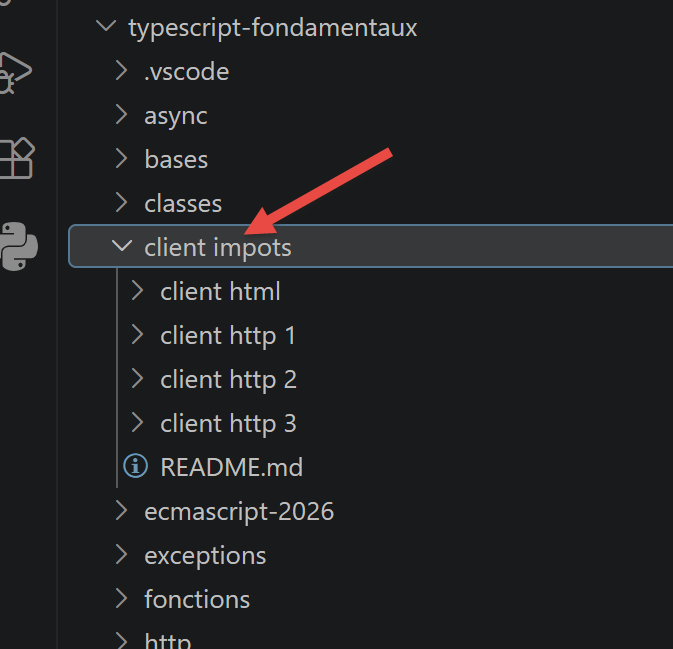
6.1. Introduction
In this section, we will write a [node.js] client for the tax calculation service set up in the chapter “Installing a NestJS Server.” The client/server architecture will be as follows:

We will examine two versions of the client:
- Version 1 of the client will have the following layered structure: [main, dao]:

- Client version 2 will have the structure [main, métier, dao]. The server layer [métier] will be offloaded to the client:

6.2. Client HTTP 1

As mentioned, the client HTTP 1 implements the following client/server architecture:

We will implement:
- the [dao] layer as a class;
- the [main] layer as a script that uses this class;
6.2.1. The [dao] layer
The [dao] layer will be implemented by the following class, [Dao1.ts]:
'use strict';
// imports
import { AxiosInstance, AxiosRequestConfig, AxiosResponse } from 'axios';
import qs from 'qs'
class Dao1 {
private axios: AxiosInstance;
private sessionCookieName: string;
private sessionCookie: string;
// constructor
constructor(axios: AxiosInstance) {
// axios library for making requests HTTP
this.axios = axios;
// session cookie
this.sessionCookieName = "PHPSESSID";
this.sessionCookie = '';
}
// session initialization
async initSession(): Promise<any> {
// request options HHTP [get /main.php?action=init-session&type=json]
const options: AxiosRequestConfig = {
// [mise à jour TypeScript] URL included in [options.url] (see getRemoteData)
url: 'main.php',
method: "GET",
// parameters of URL
params: {
action: 'init-session',
type: 'json'
}
};
// Execution of the query HTTP
return await this.getRemoteData(options);
}
async authentifierUtilisateur(user: string, password: string): Promise<any> {
// options for the HHTP query [post /main.php?action=authentifier-utilisateur]
const options: AxiosRequestConfig = {
url: 'main.php',
method: "POST",
headers: {
'Content-type': 'application/x-www-form-urlencoded',
},
// body of POST
data: qs.stringify({
user: user,
password: password
}),
// parameters of the URL
params: {
action: 'authentifier-utilisateur'
}
};
// query execution HTTP
return await this.getRemoteData(options);
}
// tax calculation
async calculerImpot(marié: string, enfants: number, salaire: number): Promise<any> {
// options for the query HHTP
const options: AxiosRequestConfig = {
url: 'main.php',
method: "POST",
headers: {
'Content-type': 'application/x-www-form-urlencoded',
},
// body of POST
data: qs.stringify({
marié: marié,
enfants: enfants,
salaire: salaire
}),
// URL parameters
params: {
action: 'calculer-impot'
}
};
// HTTP query execution
const data = await this.getRemoteData(options);
// result
return data;
}
// list of simulations
async listeSimulations(): Promise<any> {
// options for the query HHTP
const options: AxiosRequestConfig = {
url: 'main.php',
method: "GET",
// parameters for URL
params: {
action: 'lister-simulations'
},
};
// HTTP query execution
const data = await this.getRemoteData(options);
// Result
return data;
}
// Delete a simulation
async supprimerSimulation(index: number): Promise<any> {
// options for the HHTP query
const options: AxiosRequestConfig = {
url: 'main.php',
method: "GET",
// URL parameters
params: {
action: 'supprimer-simulation',
numéro: index
},
};
// Executing the query HTTP
const data = await this.getRemoteData(options);
// Result
return data;
}
async getRemoteData(options: AxiosRequestConfig): Promise<any> {
// for the session cookie
if (!options.headers) {
options.headers = {} as any;
}
(options.headers as any).Cookie = this.sessionCookie;
// Execution of the HTTP request
let response: AxiosResponse;
try {
// asynchronous request
response = await this.axios.request(options);
} catch (error: any) {
// The parameter [error] is an exception instance—it can take various forms
if (error.response) {
// the server's response is in [error.response]
response = error.response;
} else {
// The error is re-triggered
throw error;
}
}
// response is the entire response HTTP from the server (HTTP headers + the response itself)
// retrieves the session cookie if it exists
const setCookie = response.headers['set-cookie'];
if (setCookie) {
// setCookie is an array
// search for the session cookie in this array
let trouvé = false;
let i = 0;
while (!trouvé && i < setCookie.length) {
// Search for the session cookie
const results = RegExp('^(' + this.sessionCookieName + '.+?);').exec(setCookie[i]);
if (results) {
// The session cookie is stored
// eslint-disable-next-line require-atomic-updates
this.sessionCookie = results[1];
// Found it
trouvé = true;
} else {
// next element
i++;
}
}
}
// the server response is in [response.data]
return response.data;
}
}
// exporting the class
export default Dao1;
- Here we apply what we learned in the chapter on the HTTP functions of TypeScript;
- Lines 14–20: the class constructor. This class will have three properties:
- [axios]: the [axios] object used to make HTTP requests. This is passed by the calling code;
- [sessionCookieName]: Depending on the server, the session cookie may have different names. Here, it is [PHPSESSID];
- [sessionCookie]: the session cookie sent by the server and stored by the client;
- lines 62–85: the asynchronous function [calculerImpot] makes the request [post /main.php?action=calculer-impot] by posting the parameters [marié, enfants, salaire]. It returns the string jSON transmitted by the server as a JavaScript object;
- lines 88–102: The asynchronous function [listeSimulations] makes the request [get /main.php?action=lister-simulations]. It returns the string jSON sent by the server as a JavaScript object;
- lines 105–120: The asynchronous function [supprimerSimulation] makes the request [get /main.php?action=supprimer-simulation&numéro=index]. It returns the string jSON sent by the server as a JavaScript object;
- line 132: the notation [this.axios] is used because here, the [axios] object passed to the constructor was stored in the [this.axios] property (line 9);
- line 172: the [Dao1] class is exported so it can be used;
6.2.2. The [main1] script
This script chains together a series of calls to the server via the Dao1 class: session initialization, authentication, three tax calculations (in parallel), a list of simulations, and the deletion of one of them:
// importing axios
import axios from 'axios';
// importing the Dao class
import Dao from './Dao1.js';
// asynchronous function [main]
async function main(): Promise<void> {
// Axios configuration
axios.defaults.timeout = 2000;
axios.defaults.baseURL = 'http://localhost:3000';
// instantiating the [dao] layer
const dao = new Dao(axios);
// using the layer [dao]
try {
// session initialization
log("-----------init-session");
let response = await dao.initSession();
log(response);
// authentication
log("-----------authentifier-utilisateur");
response = await dao.authentifierUtilisateur("admin", "admin");
log(response);
// tax calculations
log("-----------calculer-impot x 3");
response = await Promise.all([
dao.calculerImpot("oui", 2, 45000),
dao.calculerImpot("non", 2, 45000),
dao.calculerImpot("non", 1, 30000)
]);
log(response);
// List of simulations
log("-----------liste-des-simulations");
response = await dao.listeSimulations();
log(response);
// delete a simulation
log("-----------suppression simulation n° 1");
response = await dao.supprimerSimulation(1);
log(response);
} catch (error: any) {
// log the error
console.log("erreur=", error.message);
}
}
// log jSON
function log(object: unknown): void {
console.log(JSON.stringify(object, null, 2));
}
// Execution
main();
Comments
- line 3: the [axios] library is imported;
- line 5: imports the [Dao] class;
- line 9: the [main] function, which communicates with the server, is asynchronous;
- Lines 11–12: Default configuration of the HTTP requests that will be sent to the server:
- line 9: [timeout] with a timeout of 2 seconds;
- line 10: all URL requests are prefixed with the Laragon web server’s base URL;
- line 14 : the [Dao] layer is built. It can now be used;
- lines 48–50: the [log] function is designed to display the jSON string from a JavaScript object in a formatted manner: vertically with a two-space indentation (3rd parameter);
- lines 17–20: initialization of the jSON session;
- Lines 21–24: authentication;
- lines 25–32: Three tax calculations are requested in parallel. Thanks to [await Promise.all], execution is blocked until all three results have been obtained;
- lines 33–36: list of simulations;
- lines 37–40: Deletion of a simulation;
- lines 41–44: handling of any exceptions;
The results of the execution are as follows:
Execution result:
1 2 3 4 5 6 7 8 9 10 11 12 13 14 15 16 17 18 19 20 21 22 23 24 25 26 27 28 29 30 31 32 33 34 35 36 37 38 39 40 41 42 43 44 45 46 47 48 49 50 51 52 53 54 55 56 57 58 59 60 61 62 63 64 65 66 67 68 69 70 71 72 73 74 75 76 77 78 79 80 81 82 83 84 85 86 87 88 89 90 91 92 93 94 95 96 97 98 99 100 101 102 103 104 105 106 107 108 109 110 111 112 113 114 115 116 117 118 119 120 121 | |
6.3. Client HTTP 2
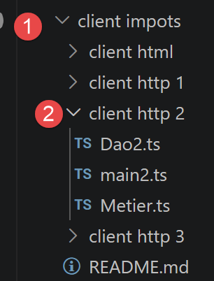
The architecture of client HTTP2 is as follows:

The [métier] layer has been moved from the server to the JavaScript client. Here, the [main] layer will not need to pass through the [métier] layer to reach the [dao] layer. We will use these two layers as centers of expertise:
- the [main] layer goes through the [dao] layer whenever it needs data that is on the server;
- the [main] layer requests the [métier] layer to perform the tax calculations;
- The [métier] layer is independent of the [dao] layer and never calls upon it;
6.3.1. The [Métier] class
The tax calculation logic closely follows that of the PHP class from the “Introduction to the PHP7 Language Through Examples” course—we will not detail it again here; we are only interested in its translation into TypeScript:
'use strict';
// Business Class
class Métier {
// [any]: the exact structure of the data sent by the tax server (rates, thresholds, etc.)
// is not documented here; we are therefore intentionally keeping this type flexible
taxAdminData: any;
// manufacturer
constructor(taxAdmindata: any) {
// this.taxAdminData: data from the tax authority
this.taxAdminData = taxAdmindata;
}
// tax calculation
// --------------------------------------------------------------------------
calculerImpot(marié: string, enfants: number, salaire: number): any {
// Married: Yes, No
// children: number of children
// Salary: annual salary
// this.taxAdminData: Data from the tax authorities
//
// tax calculation with children
const result1 = this.calculerImpot2(marié, enfants, salaire);
const impot1 = result1["impôt"];
// tax calculation without children
let result2, impot2, plafondDemiPart;
if (enfants !== 0) {
result2 = this.calculerImpot2(marié, 0, salaire);
impot2 = result2["impôt"];
// Application of the family quotient cap
plafondDemiPart = this.taxAdminData.plafondQfDemiPart;
if (enfants < 3) {
// PLAFOND_QF_DEMI_PART euros for the first two children
impot2 = impot2 - enfants * plafondDemiPart;
} else {
// PLAFOND_QF_DEMI_PART euros for the first two children, double that amount for subsequent children
impot2 = impot2 - 2 * plafondDemiPart - (enfants - 2) * 2 * plafondDemiPart;
}
} else {
// no tax recalculation
impot2 = impot1;
result2 = result1;
}
// the highest tax amount is used in [impot1, impot2]
let impot, taux, surcôte;
if (impot1 > impot2) {
impot = impot1;
taux = result1["taux"];
surcôte = result1["surcôte"];
} else {
surcôte = impot2 - impot1 + result2["surcôte"];
impot = impot2;
taux = result2["taux"];
}
// Calculation of a possible tax deduction
const décôte = this.getDecôte(marié, impot);
impot -= décôte;
// Calculation of a potential tax reduction
const réduction = this.getRéduction(marié, salaire, enfants, impot);
impot -= réduction;
// Result
return {
"impôt": Math.floor(impot), "surcôte": surcôte, "décôte": décôte, "réduction": réduction,
"taux": taux
};
}
// --------------------------------------------------------------------------
calculerImpot2(marié: string, enfants: number, salaire: number): any {
// married: yes, no
// children: number of children
// Salary: annual salary
// this->taxAdminData: data from the tax authorities
//
// number of shares
marié = marié.toLowerCase();
let nbParts;
if (marié === "oui") {
nbParts = enfants / 2 + 2;
} else {
nbParts = enfants / 2 + 1;
}
// 1 share per child starting with the third
if (enfants >= 3) {
// half an additional share for each child starting with the third
nbParts += 0.5 * (enfants - 2);
}
// taxable income
const revenuImposable = this.getRevenuImposable(salaire);
// surcharge
let surcôte = Math.floor(revenuImposable - 0.9 * salaire);
// for rounding issues
if (surcôte < 0) {
surcôte = 0;
}
// family quotient
const quotient = revenuImposable / nbParts;
// tax calculation
const limites = this.taxAdminData.limites;
const coeffR = this.taxAdminData.coeffR;
const coeffN = this.taxAdminData.coeffN;
// is placed at the end of the limits table to terminate the following loop
limites[limites.length - 1] = quotient;
// looks up the tax rate
let i = 0;
while (quotient > limites[i]) {
i++;
}
// Since the family quotient was placed at the end of the limits table, the previous loop
// cannot go beyond the bounds of the array
// Now we can calculate the tax
const impôt = Math.floor(revenuImposable * coeffR[i] - nbParts * coeffN[i]);
// Result
return { "impôt": impôt, "surcôte": surcôte, "taux": coeffR[i] };
}
// revenuImposable = annualSalary - deduction
// The deduction has a minimum and a maximum
getRevenuImposable(salaire: number): number {
// 10% salary deduction
let abattement = 0.1 * salaire;
// This deduction cannot exceed taxAdminData.getAbattementDixPourCentMax()
if (abattement > this.taxAdminData.abattementDixPourcentMax) {
abattement = this.taxAdminData.abattementDixPourcentMax;
}
// The deduction cannot be less than taxAdminData.getAbattementDixPourcentMin()
if (abattement < this.taxAdminData.abattementDixPourcentMin) {
abattement = this.taxAdminData.abattementDixPourcentMin;
}
// taxable income
const revenuImposable = salaire - abattement;
// net income
return Math.floor(revenuImposable);
}
// calculates any discount
getDecôte(marié: string, impots: number): number {
// Initially, a zero discount
let décôte = 0;
// maximum tax amount to qualify for the discount
let plafondImpôtPourDécôte = marié === "oui" ?
this.taxAdminData.plafondImpotCouplePourDecote :
this.taxAdminData.plafondImpotCelibatairePourDecote;
let plafondDécôte;
if (impots < plafondImpôtPourDécôte) {
// maximum discount amount
plafondDécôte = marié === "oui" ?
this.taxAdminData.plafondDecoteCouple :
this.taxAdminData.plafondDecoteCelibataire;
// theoretical discount
décôte = plafondDécôte - 0.75 * impots;
// The tax credit cannot exceed the tax amount
if (décôte > impots) {
décôte = impots;
}
// no discount <0
if (décôte < 0) {
décôte = 0;
}
}
// result
return Math.ceil(décôte);
}
// calculates a possible reduction
getRéduction(marié: string, salaire: number, enfants: number, impots: number): number {
// the income threshold for eligibility for the 20% reduction
let plafondRevenuPourRéduction = marié === "oui" ?
this.taxAdminData.plafondRevenusCouplePourReduction :
this.taxAdminData.plafondRevenusCelibatairePourReduction;
plafondRevenuPourRéduction += enfants * this.taxAdminData.valeurReducDemiPart;
if (enfants > 2) {
plafondRevenuPourRéduction += (enfants - 2) * this.taxAdminData.valeurReducDemiPart;
}
// taxable income
const revenuImposable = this.getRevenuImposable(salaire);
// reduction
let réduction = 0;
if (revenuImposable < plafondRevenuPourRéduction) {
// 20% reduction
réduction = 0.2 * impots;
}
// result
return Math.ceil(réduction);
}
}
// export the class
export default Métier;
- line 8: taxAdminData: any — the exact structure of the data sent by the tax server (rates, thresholds, etc.) is not documented; we therefore remain intentionally flexible regarding this type rather than speculating on an uncertain interface;
- The [Métier] class is exported, line 191;
6.3.2. The class [Dao2]

The [Dao2] class implements the [dao] layer of the JavaScript client above as follows:
'use strict';
// imports
import { AxiosInstance, AxiosRequestConfig, AxiosResponse } from 'axios';
import qs from 'qs'
class Dao2 {
private axios: AxiosInstance;
private sessionCookieName: string;
private sessionCookie: string;
// constructor
constructor(axios: AxiosInstance) {
this.axios = axios;
// session cookie
this.sessionCookieName = "PHPSESSID";
this.sessionCookie = '';
}
// session initialization
async initSession(): Promise<any> {
// request options HHTP [get /main.php?action=init-session&type=json]
const options: AxiosRequestConfig = {
url: 'main.php',
method: "GET",
// URL parameters
params: {
action: 'init-session',
type: 'json'
}
};
// Execution of the query HTTP
return await this.getRemoteData(options);
}
async authentifierUtilisateur(user: string, password: string): Promise<any> {
// options for the query HHTP [post /main.php?action=authentifier-utilisateur]
const options: AxiosRequestConfig = {
url: 'main.php',
method: "POST",
headers: {
'Content-type': 'application/x-www-form-urlencoded',
},
// body of POST
data: qs.stringify({
user: user,
password: password
}),
// parameters of the URL
params: {
action: 'authentifier-utilisateur'
}
};
// query execution HTTP
return await this.getRemoteData(options);
}
async getAdminData(): Promise<any> {
// options for the query H HTP [get /main.php?action=get-admindata]
const options: AxiosRequestConfig = {
url: 'main.php',
method: "GET",
// parameters for URL
params: {
action: 'get-admindata'
}
};
// Execution of the query HTTP
const data = await this.getRemoteData(options);
// result
return data;
}
async getRemoteData(options: AxiosRequestConfig): Promise<any> {
// for the session cookie
if (!options.headers) {
options.headers = {} as any;
}
(options.headers as any).Cookie = this.sessionCookie;
// Execution of the HTTP request
let response: AxiosResponse;
try {
// asynchronous request
response = await this.axios.request(options);
} catch (error: any) {
// The parameter [error] is an exception instance—it can take various forms
if (error.response) {
// the server response is in [error.response]
response = error.response;
} else {
// The error is re-triggered
throw error;
}
}
// response is the entire response HTTP from the server (HTTP headers + the response itself)
// retrieves the session cookie if it exists
const setCookie = response.headers['set-cookie'];
if (setCookie) {
// setCookie is an array
// search for the session cookie in this array
let trouvé = false;
let i = 0;
while (!trouvé && i < setCookie.length) {
// Search for the session cookie
const results = RegExp('^(' + this.sessionCookieName + '.+?);').exec(setCookie[i]);
if (results) {
// The session cookie is stored
// eslint-disable-next-line require-atomic-updates
this.sessionCookie = results[1];
// Found it
trouvé = true;
} else {
// next element
i++;
}
}
}
// The server response is in [response.data]
return response.data;
}
}
// export of the class
export default Dao2;
Comments
- The [Dao2] class implements only three of the possible requests to the tax calculation server:
- [init-session] (lines 21–35): to initialize the jSON session;
- [authentifier-utilisateur] (lines 37–57): to authenticate;
- [get-admindata] (lines 59–73): to retrieve data from the tax authority that will enable tax calculations to be performed on the client side;
We will now use Postman (see the section “Error: Reference source not found”) to demonstrate how the [[get-admindata]] action works. If you haven’t already done so, import (Ctrl-O) the HTTP request collection—stored in the [impots-servers-tests.postman_collection.json] file within the [php_server] folder—into POSTMAN:
 |  |
Then execute the three [2-4] queries listed above in order.
The query [4] is as follows:
 |
The result of this query is as follows:
{
"action": "get-admindata",
"état": 1000,
"réponse": {
"limites": [
9964,
27519,
73779,
156244,
0,
9964,
27519,
73779,
156244,
0
],
"coeffR": [
0,
0.14,
0.3,
0.41,
0.45,
0,
0.14,
0.3,
0.41,
0.45
],
"coeffN": [
0,
1394.96,
5798,
13913.69,
20163.45,
0,
1394.96,
5798,
13913.69,
20163.45
],
"plafondQfDemiPart": "1551.00",
"plafondRevenusCelibatairePourReduction": "21037.00",
"plafondRevenusCouplePourReduction": "42074.00",
"valeurReducDemiPart": "3797.00",
"plafondDecoteCelibataire": "1196.00",
"plafondDecoteCouple": "1970.00",
"plafondImpotCouplePourDecote": "2627.00",
"plafondImpotCelibatairePourDecote": "1595.00",
"abattementDixPourcentMax": "12502.00",
"abattementDixPourcentMin": "437.00"
}
}
The contents of the two database tables are available in the form jSON.
6.3.3. The script [main2]

This script initializes the session, authenticates, retrieves the tax data, and then performs the tax calculations locally via the business layer—these calculations no longer involve the server:
// imports
import axios from 'axios';
// imports
import Dao from './Dao2.js';
import Métier from './Metier.js';
// asynchronous function [main]
async function main(): Promise<void> {
// Axios configuration
axios.defaults.timeout = 2000;
axios.defaults.baseURL = 'http://localhost';
// [dao] layer instantiation
const dao = new Dao(axios);
// requests HTTP
let taxAdminData: any;
try {
// session initialization
log("-----------init-session");
let response = await dao.initSession();
log(response);
// authentication
log("-----------authentifier-utilisateur");
response = await dao.authentifierUtilisateur("admin", "admin");
log(response);
// tax data
log("-----------get-admindata");
response = await dao.getAdminData();
log(response);
taxAdminData = response.réponse;
} catch (error: any) {
// log the error
console.log("erreur=", error.message);
// end
return;
}
// instantiate layer [métier]
const métier = new Métier(taxAdminData);
// tax calculations
log("-----------calculer-impot x 3");
const simulations: any[] = [];
simulations.push(métier.calculerImpot("oui", 2, 45000));
simulations.push(métier.calculerImpot("non", 2, 45000));
simulations.push(métier.calculerImpot("non", 1, 30000));
// list of simulations
log("-----------liste-des-simulations");
log(simulations);
// deletion of a simulation
log("-----------suppression simulation n° 1");
simulations.splice(1, 1);
log(simulations);
}
// log jSON
function log(object: unknown): void {
console.log(JSON.stringify(object, null, 2));
}
// execution
main();
- line 30: taxAdminData = response.réponse — the tax data, received only once from the server, is then reused locally for all calculations;
- line 39: const business = new Business(taxAdminData) — the business layer is instantiated with this data, without ever making another network request;
- lines 44–46: the three tax calculations are now synchronous, executed directly in the browser or node.js, without going through the server.
Execution result:
"-----------init-session"
{
"action": "init-session",
"état": 700,
"réponse": "session démarrée avec type [json]"
}
"-----------authentifier-utilisateur"
{
"action": "authentifier-utilisateur",
"état": 200,
"réponse": "Authentification réussie [admin, admin]"
}
"-----------get-admindata"
{
"action": "get-admindata",
"état": 1000,
"réponse": {
"limites": [
9964,
27519,
73779,
156244,
0,
9964,
27519,
73779,
156244,
0
],
"coeffR": [
0,
0.14,
0.3,
0.41,
0.45,
0,
0.14,
0.3,
0.41,
0.45
],
"coeffN": [
0,
1394.96,
5798,
13913.69,
20163.45,
0,
1394.96,
5798,
13913.69,
20163.45
],
"plafondQfDemiPart": "1551.00",
"plafondRevenusCelibatairePourReduction": "21037.00",
"plafondRevenusCouplePourReduction": "42074.00",
"valeurReducDemiPart": "3797.00",
"plafondDecoteCelibataire": "1196.00",
"plafondDecoteCouple": "1970.00",
"plafondImpotCouplePourDecote": "2627.00",
"plafondImpotCelibatairePourDecote": "1595.00",
"abattementDixPourcentMax": "12502.00",
"abattementDixPourcentMin": "437.00"
}
}
"-----------calculer-impot x 3"
"-----------liste-des-simulations"
[
{
"impôt": 502,
"surcôte": 0,
"décôte": 857,
"réduction": 126,
"taux": 0.14
},
{
"impôt": 3250,
"surcôte": 370,
"décôte": 0,
"réduction": 0,
"taux": 0.3
},
{
"impôt": 1687,
"surcôte": 0,
"décôte": 0,
"réduction": 0,
"taux": 0.14
}
]
"-----------suppression simulation n° 1"
[
{
"impôt": 502,
"surcôte": 0,
"décôte": 857,
"réduction": 126,
"taux": 0.14
},
{
"impôt": 1687,
"surcôte": 0,
"décôte": 0,
"réduction": 0,
"taux": 0.14
}
]
6.4. Client HTTP 3
 |
In this section, we run the [Client HTTP 2] application in a browser according to the following architecture:
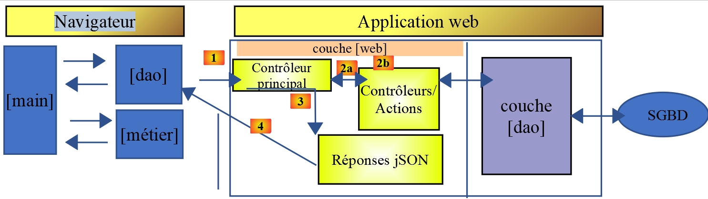
While [node.js] natively executes TypeScript via tsx, this is not the case for browsers: a tool is required to compile TypeScript into JavaScript, then assemble the whole into a single file that can be used by a HTML page. This is the role of [webpack].
Note: The [1] operation described above will be a HTTP request generated by the JavaScript code on a HTML page. We will see shortly that this HTML page is obtained via URL and [http://localhost:8080] (or 8081), requested from an internal server launched by [webpack]. The tax calculation server, on the other hand, is a NestJS application launched by URL and [http://localhost:3000] (see Installing a NestJS Server). So here we have two web applications communicating with each other, both accessed via [http://localhost] but not from the same port. We say they are on different domains. This type of request between two web applications on different domains is controlled. By default, the NestJS server will reject requests from a web client if the client does not share the same origin as the server, i.e., [http://localhost:3000]. However, it is possible to configure the NestJS server to accept these so-called “cross-domain” requests. This has been done here. That is why the JavaScript client shown below will work. You can view the configuration of the NestJS server in the chapter “Case Study: The Tax Calculation Server at NestJS,” which shows how to configure it to accept cross-domain requests.
6.4.1. Changes to the Toolset Since 2019
The original document (2019) used [babel-loader] to transpile the ES6 code into ES5, which is compatible with older browsers. Since our project is now written in TypeScript, we are replacing babel-loader with [ts-loader], which natively supports the TypeScript syntax (types, interfaces, etc.)—something that Babel completely ignores.
The project’s [webpack.config.js] file (client folder impots/client http 3) configures the [webpack] module:
/* eslint-disable */
const path = require("path");
const webpack = require("webpack");
/*
* SplitChunksPlugin is enabled by default and replaced
* deprecated CommonsChunkPlugin. It automatically identifies modules which
* should be splitted of chunk by heuristics using module duplication count and
* module category (i. e. node_modules). And splits the chunks…
*
* It is safe to remove "splitChunks" from the generated configuration
* and was added as an educational example.
*
* https://webpack.js.org/plugins/split-chunks-plugin/
*
*/
const HtmlWebpackPlugin = require("html-webpack-plugin");
/*
* We've enabled HtmlWebpackPlugin for you! This generates a html
* page for you when you compile webpack, which will make you start
* developing and prototyping faster.
*
* https://github.com/jantimon/html-webpack-plugin
*
*/
// [mise à jour TypeScript] The source files are now in .ts format: Webpack must
// resolve (resolve.extensions) and compile them with [ts-loader] instead of
// [babel-loader] (which does not support the TypeScript syntax: types, interfaces, etc.)
module.exports = {
mode: "development",
//entry: "./src/main3.ts",
entry: "./src/index.ts",
output: {
filename: "[name].[chunkhash].js",
path: path.resolve(__dirname, "dist")
},
resolve: {
extensions: [".ts", ".js"]
},
plugins: [new webpack.ProgressPlugin(), new HtmlWebpackPlugin()],
module: {
rules: [
{
test: /\.ts$/,
include: [path.resolve(__dirname, "src")],
loader: "ts-loader"
}
]
},
optimization: {
splitChunks: {
cacheGroups: {
vendors: {
priority: -10,
test: /[\\/]node_modules[\\/]/
}
},
chunks: "async",
minChunks: 1,
minSize: 30000,
name: true
}
},
devServer: {
open: true
}
};
- line 36: entry: "./src/index.ts" — Webpack starts with this file and follows all its imports to build the final bundle;
- lines 42–44: resolve: { extensions: [".ts", ".js"] } — tells Webpack to also resolve .ts files even if the extension isn’t specified in the imports;
- lines 48–56: the rule that associates every .ts file in the src folder with the [ts-loader] loader — this is the direct replacement for babel-loader mentioned above.
The contents of the [./src/index.ts] file are as follows:
console.log("Bonjour le monde");
Keep in mind that the JavaScript code will be executed in a browser. Therefore, the previous line will not be written to a terminal but to the console of the browser running this code.
The file [package.json] in this subproject is as follows. It has its own scripts and dependencies (ts-loader, TypeScript, as well as core-js and regenerator-runtime, which are polyfills to ensure compatibility with older browsers):
{
"name": "client-http-3",
"version": "1.0.0",
"description": "My webpack project",
"scripts": {
"test": "echo \"Error: no test specified\" && exit 1",
"build": "webpack",
"start": "webpack-dev-server"
},
"author": "serge.tahe@gmail.com",
"license": "ISC",
"devDependencies": {
"@webpack-cli/init": "^0.2.2",
"html-webpack-plugin": "^3.2.0",
"ts-loader": "^8.4.0",
"typescript": "^5.6.0",
"webpack": "^4.40.2",
"webpack-cli": "^3.3.9",
"webpack-dev-server": "^3.8.1"
},
"dependencies": {
"axios": "^1.7.0",
"core-js": "^3.2.1",
"qs": "^6.12.0",
"regenerator-runtime": "^0.13.3"
}
}
- lines 12–20: dependencies required during project development (compilation);
-
lines 21–26: dependencies required when running the project;
-
line 17: [webpack]: the orchestrator. [webpack] performs the transpilation of the codes TypeScript → ES5, and then assembles all the resulting files into a single file;
- line 18: [webpack-cli]: required by [webpack];
- line 13: [@webpack-cli/init]: used to configure [webpack];
- line 19: [webpack-dev-server]: provides a development web server that runs by default on ports 8080 or 8081. When the source files are modified, [webpack-dev-server] automatically reloads the web application;
6.4.2. Compiling and Running the Project
The file [package.json] defines three tasks, [npm]:
"scripts": {
"test": "echo \"Error: no test specified\" && exit 1",
"build": "webpack",
"start": "webpack-dev-server"
},
These tasks are recognized by [VSCode], which offers them for execution. Hover your mouse over the “build” task on line 3:
 |
Simply click on [Run Script] to run the selected task. You can also type the following command:
in a terminal located in the folder containing the file [package.json].
The task [build] creates a folder named [dist] (1) within the project VSCode:
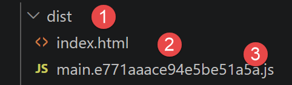 |
- In [3]: the project is compiled into [dist/main.hash.js], and a page named [dist/index.html] is created (2);
The generated page [index.html] is as follows:
<!DOCTYPE html>
<html>
<head>
<meta charset="UTF-8">
<title>Webpack App</title>
</head>
<body>
<script type="text/javascript" src="main.e771aaace94e5be51a5a.js"></script></body>
</html>
This page therefore simply encapsulates the [main.hash.js] file generated by [webpack].
The project is executed by the task [start]:
The page [dist/index.html] is then loaded onto a server—part of the [webpack] suite—running on port 8080 or 8081 of the local machine and displayed by the machine’s default browser:
 |
- in [2], the service port of the [webpack] web server;
- to [3-4], the [console] tab in the browser’s developer tools, in this case Microsoft Edge (set to F12);
- in [5], the result of executing the file [src/index.ts]. Recall that the contents of that file were as follows:
console.log("Bonjour le monde");
Now, let’s change that content to the following line in [index.ts]:
and save the file. Automatically (without recompiling), a new file named [index.html] is generated, and this new file, [index.html], is loaded into the browser:
 |
It is not necessary to run the [build] task before the [start] task: the latter first compiles the project. It does not store the output of this compilation in the [dist] folder. To verify this, simply delete that folder. You will then see that the task [start] compiles and runs the project without creating the [dist] folder. It appears to store its [index.html, main.hash.js] output in a folder specific to [webpackdev-server]. This behavior is sufficient for our tests.
When the development server is running, any saved change to one of the project files triggers a recompilation. For this reason, we disable the [Auto Save] mode of [VSCode]. This is because we do not want a recompilation to occur every time characters are typed into one of the project files. We only want a recompilation to occur when changes are saved:
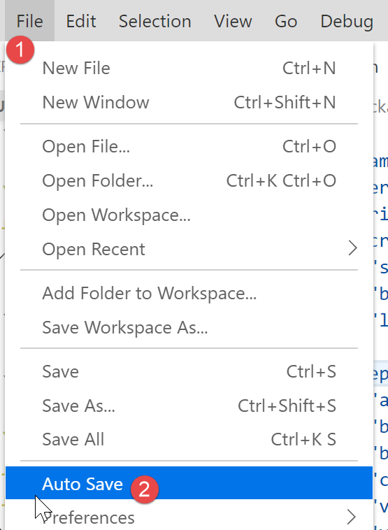
- In [2], the [Auto Save] option must not be checked;
6.4.3. Testing the JavaScript web client for the tax calculation server
To test the JavaScript web client for the tax calculation server, you must specify [main3.js] [1] as the project entry point in the file [webpack.config.js] [2-3]:
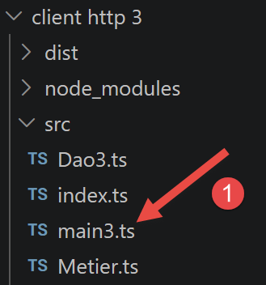 | 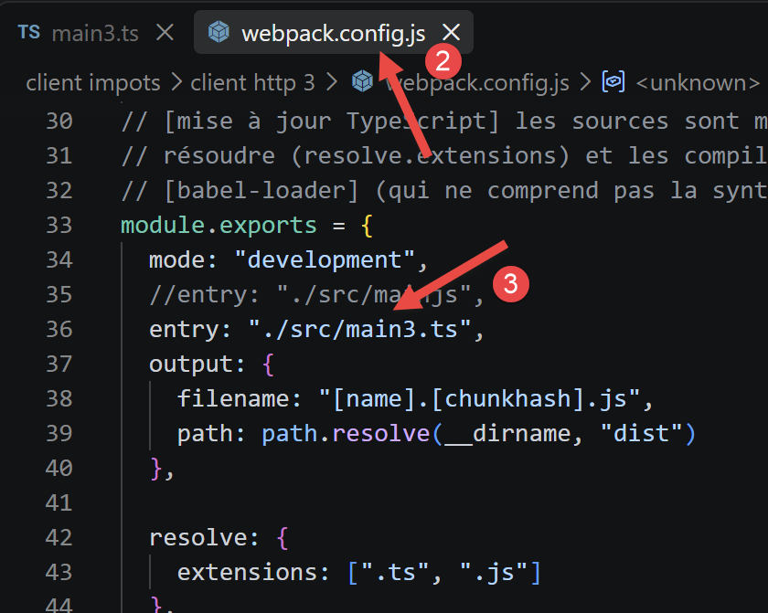 |
- In [1], the script [main3.ts];
- in [2-3], the entry [entry] to be modified in the configuration file for [webpack];
6.4.3.1. The [main3] script
This script uses the content from main2.ts (previous chapter), adapted for a browser (importing polyfills):
// imports
import axios from 'axios';
import "core-js/stable";
import "regenerator-runtime/runtime";
// imports
import Dao from './Dao3';
import Métier from './Metier';
// asynchronous function [main]
async function main(): Promise<void> {
// axios configuration
axios.defaults.timeout = 2000;
axios.defaults.baseURL = 'http://localhost:3000/';
axios.defaults.withCredentials = true;
// QZXW2HTML layer instantiation BW2Rhb10ZQX
const dao = new Dao(axios);
// requests HTTP
let taxAdminData: any;
try {
// session initialization
log("-----------init-session");
let response = await dao.initSession();
log(response);
if (response.état != 700) {
throw new Error(JSON.stringify(response.réponse));
}
// authentication
log("-----------authentifier-utilisateur");
response = await dao.authentifierUtilisateur("admin", "admin");
log(response);
if (response.état != 200) {
throw new Error(JSON.stringify(response.réponse));
}
// tax data
log("-----------get-admindata");
response = await dao.getAdminData();
log(response);
if (response.état != 1000) {
throw new Error(JSON.stringify(response.réponse));
}
taxAdminData = response.réponse;
} catch (error: any) {
// log the error
console.log("erreur=", error.message);
// end
return;
}
// instantiate layer [métier]
const métier = new Métier(taxAdminData);
// tax calculations
log("-----------calculer-impot x 3");
const simulations: any[] = [];
simulations.push(métier.calculerImpot("oui", 2, 45000));
simulations.push(métier.calculerImpot("non", 2, 45000));
simulations.push(métier.calculerImpot("non", 1, 30000));
// list of simulations
log("-----------liste-des-simulations");
log(simulations);
// Deleting a Simulation
log("-----------suppression simulation n° 1");
simulations.splice(1, 1);
log(simulations);
}
// log jSON
function log(object: unknown): void {
console.log(JSON.stringify(object, null, 2));
}
// Execution
main();
- Lines 3–4: import "core-js/stable" and import "regenerator-runtime/runtime" — the polyfills needed for the compiled code to work in browsers that do not yet natively implement all the latest language features;
- line 15: axios.defaults.withCredentials = true — essential in a browser so that session cookies are automatically passed between requests, which the code did manually in previous versions (node.js does not support browser cookies).
6.4.3.2. The [Dao3] class
Since the session cookie is now managed by the [axios] module, we can remove the handling of this cookie from the [Dao] class:
'use strict';
// imports
import { AxiosInstance, AxiosRequestConfig, AxiosResponse } from 'axios';
import qs from 'qs'
class Dao3 {
private axios: AxiosInstance;
// constructor
constructor(axios: AxiosInstance) {
this.axios = axios;
}
// init session
async initSession(): Promise<any> {
// query options HHTP [get /main.php?action=init-session&type=json]
const options: AxiosRequestConfig = {
url: 'main.php',
method: "GET",
// URL parameters
params: {
action: 'init-session',
type: 'json'
}
};
// Execution of the query HTTP
return await this.getRemoteData(options);
}
async authentifierUtilisateur(user: string, password: string): Promise<any> {
// options for the query HHTP [post /main.php?action=authentifier-utilisateur]
const options: AxiosRequestConfig = {
url: 'main.php',
method: "POST",
headers: {
'Content-type': 'application/x-www-form-urlencoded',
},
// body of POST
data: qs.stringify({
user: user,
password: password
}),
// parameters of the URL
params: {
action: 'authentifier-utilisateur'
}
};
// query execution HTTP
return await this.getRemoteData(options);
}
async getAdminData(): Promise<any> {
// options for the query HHTP [get /main.php?action=get-admindata]
const options: AxiosRequestConfig = {
url: 'main.php',
method: "GET",
// parameters for URL
params: {
action: 'get-admindata'
}
};
// Execution of the query HTTP
const data = await this.getRemoteData(options);
// result
return data;
}
async getRemoteData(options: AxiosRequestConfig): Promise<any> {
// Execution of the query HTTP
let response: AxiosResponse;
try {
// asynchronous request
response = await this.axios.request(options);
} catch (error: any) {
// The parameter [error] is an exception instance—it can take various forms
if (error.response) {
// the server response is in [error.response]
response = error.response;
} else {
// The error is re-triggered
throw error;
}
}
// The response is the entire HTTP response from the server (HTTP headers + the response itself)
// the server's response is in [response.data]
return response.data;
}
}
// export of the class
export default Dao3;
In this code, there is no longer any cookie handling.
6.4.3.3. Compilation and Execution
The package.json file defines two npm tasks:
- [npm run build] — compiles the project; the resulting files are placed in dist/ (a main.<hash>.js file, and a index.html file that automatically integrates it using the html-webpack-plugin);
- [npm start] — starts webpack-dev-server: compiles the project and serves it at http://localhost:8080, with automatic page reloading every time a source file is saved.
We run these two tasks. The result on the [console] page in the browser (run F12) is as follows:
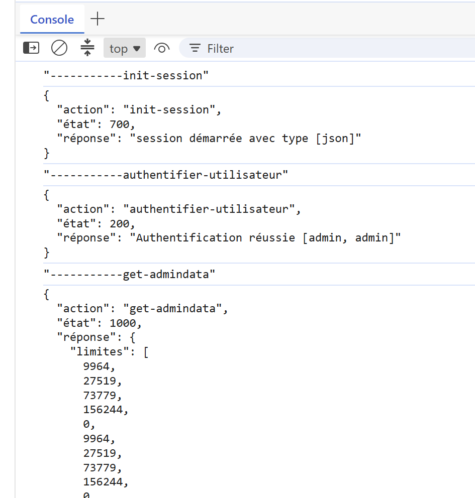 |
6.5. Client HTML
 |
The previous sections used the [Client HTTP 3] client exclusively in console mode: the [main3.ts] script communicates with the server and then displays its results using console.log, without any page visible in the browser. We will now build a true graphical client, complete with screens (authentication, tax calculation, list of simulations).
We’ll start with the [Client HTTP 3] client project (same files as [package.json] and [tsconfig.json]) and reuse two existing files without modifying them: [Dao3.ts] (layer [dao]) and [Metier.ts] (layer [métier], already discussed in connection with [main3.ts]). We are only adding:
- a file named [src/index.html], which serves as a template for the page (header, CSS styles, area where views are displayed);
- a new file, [Vues.ts], which constructs the elements HTML (forms, table, error messages) directly in JavaScript, without ever calling the server itself;
- a new file, [AppHtml.ts], the application controller: it coordinates the [dao] and [métier] layers, then instructs the [vues] layer to display the result;
- a minor modification to [webpack.config.js] so that the project compiles this new entry point with the new template HTML.
The quartet [dao] / [métier] / [vues] / controller thus replicates, exactly, the layered architecture already covered in this course: the [dao] layer for server access, the [métier] layer for application logic (tax calculation), and the main script (here, the [AppHtml] class) for orchestration. Only the [vues] layer is truly new: it replaces the console output with browser output.
6.5.1. Solution Architecture
This client, HTML, operates exactly the same way as [main3.ts], and this is a key design choice: it only calls the server (PHP) for three actions—always the same ones: init-session, authenticate-user, and get-admindata. However, the server’s code (PHP) shows that it is also capable of calculating the tax itself and storing the simulations in its session (this is what the actions calculate-tax, list-simulations, and delete-simulation, found in the [Controllers] folder)—but this client does not use them.
The reason is simple: once the tax data (rates, thresholds, etc.) has been retrieved just once using get-admindata, everything needed to calculate the tax is already in the browser, thanks to the [Métier] class. Requesting this calculation from the server for each simulation would require an avoidable round trip over the network; likewise, since each calculated simulation is immediately stored in the browser, requesting the list again from the server (lister-simulations) would add no value. This client therefore minimizes server requests as much as possible—exactly the principle already implemented in [main3.ts]:
- the [dao] layer ([Dao3.ts]) remains unchanged: its three methods already presented above (initSession, authentifierUtilisateur, getAdminData) are sufficient; none are added to it;
- immediately after successful authentication, getAdminData is called once and for all, and its result is used to construct a Business object (new Business(taxAdminData)), which is retained throughout the entire work session;
- each tax calculation then directly calls métier.calculerImpot(married, children, salary)—an ordinary JavaScript function, executed in the browser, without any network calls;
- the calculated simulations are stored in a simple array JavaScript, kept in memory by the controller—one push per calculation, one splice per deletion, exactly as [main3.ts] does with its instructions simulations.push(...) and simulations.splice(1, 1).
A slight difference from [main3.ts]: the métier.calculerImpot method returns only the values it has calculated (tax, surcharge, discount, reduction, rate), not the parameters entered by the user (married, children, salary). [main3.ts] doesn’t need them, since it simply uses console.log; but our view [Liste des simulations] must display these three parameters in the table—so the controller attaches them to the result itself before storing it (we’ll see this in the code for [AppHtml.ts]).
Finally, the [Fin de session] view no longer makes a call to the server either: it simply discards the [Métier] object and the list of simulations, then redisplays the authentication screen. Recall that the responses from the three server actions still in use always have the same format, which we’ve already seen in [main3.ts]: a JSON object { action, status, response }, where response contains either the requested result (if successful) or an error message—a string or an array of strings, depending on the relevant PHP controller.
6.5.1.1. The HTML template: the [src/index.html] file
A [webpack] project using [html-webpack-plugin] (as is the case here; see the [webpack.config.js] file) can start with a ready-made HTML page—a “template — into which the plugin will automatically insert the <script> tag that loads the compiled bundle. Until now, this project did not have a template: [html-webpack-plugin] generated a minimal, empty, unstyled HTML page. We are now providing one: the file [src/index.html], which contains:
- a <style> block containing all the application’s formatting (header, menu, forms, table, error and result messages);
- a single <div id="app"></div> tag: this is the only “visible” HTML element in the template—the rest of the page (header, forms, table, etc.) will be dynamically generated in JavaScript by the [Vues] class, inside this tag.
<!DOCTYPE html>
<html lang="fr">
<head>
<meta charset="UTF-8" />
<title>Application impôts</title>
<style>
:root {
--bleu-titre: #1976d2;
--bleu-clair: #d6e9f8;
--bleu-clair-bord: #b6d7f0;
--vert-clair: #dcedc8;
--vert-clair-bord: #b9d999;
--gris-bandeau: #e8eaed;
--gris-texte: #333;
--lien-bleu: #1a73e8;
}
* {
box-sizing: border-box;
}
body {
margin: 0;
font-family: -apple-system, "Segoe UI", Arial, sans-serif;
color: var(--gris-texte);
background: #ffffff;
}
#app {
max-width: 900px;
margin: 20px auto;
border: 1px solid #ddd;
}
/* ---------- header ---------- */
.bandeau {
display: flex;
align-items: center;
gap: 24px;
background: var(--gris-bandeau);
padding: 20px 30px;
}
.bandeau .logo {
flex: none;
}
.bandeau h1 {
margin: 0;
font-size: 28px;
font-weight: 400;
color: #444;
}
/* ---------- body ---------- */
.corps {
display: flex;
min-height: 320px;
}
.menu {
flex: 0 0 160px;
padding: 24px 16px;
border-right: 1px solid #eee;
}
.menu a {
display: block;
color: var(--lien-bleu);
text-decoration: none;
margin-bottom: 14px;
cursor: pointer;
font-size: 14px;
}
.menu a:hover {
text-decoration: underline;
}
.contenu {
flex: 1;
padding: 24px 30px;
}
.contenu.pleine-largeur {
flex: 1 1 100%;
}
/* ---------- section title ---------- */
.titre-section {
background: var(--bleu-clair);
border: 1px solid var(--bleu-clair-bord);
padding: 10px 16px;
font-size: 16px;
margin-bottom: 20px;
}
/* ---------- forms ---------- */
.ligne-champ {
display: flex;
align-items: center;
margin-bottom: 16px;
}
.ligne-champ label {
flex: 0 0 220px;
font-size: 14px;
}
.ligne-champ .champ {
display: flex;
flex-direction: column;
}
.ligne-champ input[type="text"],
.ligne-champ input[type="password"],
.ligne-champ input[type="number"] {
padding: 6px 8px;
border: 1px solid #bbb;
border-radius: 3px;
font-size: 14px;
width: 160px;
}
.ligne-champ .aide {
font-size: 11px;
color: #888;
margin-top: 3px;
}
.radios label {
flex: none;
font-weight: normal;
margin-right: 12px;
}
button, .btn-valider {
background: #2196f3;
color: #fff;
border: none;
border-radius: 3px;
padding: 8px 20px;
font-size: 14px;
cursor: pointer;
}
button:hover {
background: #1976d2;
}
/* ---------- result / error ---------- */
.resultat {
background: var(--vert-clair);
border: 1px solid var(--vert-clair-bord);
padding: 14px 18px;
margin-top: 20px;
font-size: 14px;
line-height: 1.7;
}
.erreur {
background: #fde8e8;
border: 1px solid #f3b4b4;
color: #a02020;
padding: 12px 16px;
margin-bottom: 16px;
font-size: 14px;
}
/* ---------- simulation table ---------- */
table.simulations {
border-collapse: collapse;
width: 100%;
font-size: 13px;
}
table.simulations th,
table.simulations td {
border: 1px solid #ddd;
padding: 8px 10px;
text-align: right;
}
table.simulations th:first-child,
table.simulations td:first-child,
table.simulations th:nth-child(2),
table.simulations td:nth-child(2) {
text-align: left;
}
table.simulations th {
background: #f5f5f5;
font-weight: 600;
}
table.simulations a.supprimer {
color: var(--lien-bleu);
cursor: pointer;
text-decoration: none;
}
table.simulations a.supprimer:hover {
text-decoration: underline;
}
.simulations-vide {
font-size: 14px;
color: #777;
font-style: italic;
}
</style>
</head>
<body>
<div id="app"></div>
</body>
</html>
This is a standard HTML/CSS file—nothing specific to TypeScript here—but since the audience for this course is beginner-level, let’s go over the most important points in detail:
The CSS variables (lines 7–16):
- The block :root { --name: value; ... } declares CSS variables (also called “custom properties”): --light-blue, --light-green, etc.;
- these are then reused throughout the rest of the stylesheet using the var(...) function, for example, background: var(--gray-banner); on line 40;
- The benefit: changing the color once at the top of the file is enough to change it everywhere it’s used, rather than having to search for each color code throughout the entire file.
The general structure (lines 29–87):
- #app (line 29) limits the width of the application and adds a border;
- .banner (line 36) displays the logo and title side by side using
display: flex; - .corps (line 56) divides the rest of the page into two flexible columns: .menu (line 61, fixed width of 160 pixels) on the left, and .content (line 80, variable width) on the right; The .contenu.pleine-largeur class (line 85) hides this menu column for the login view, which does not need it.
Classes reused by the [vues] layer (lines 90–210):
- .section-title (line 90): the light blue box used for the titles “Please log in,” “Fill out the form...,” and “List of your simulations”;
- .field-row (line 99): a form row (label + input field);
- .result (line 152): the light green box that displays the result of a tax calculation;
- .error (line 161): the light red box that displays an error message returned by the server;
- table.simulations (line 171): the formatting of the table in the “simulation list” view, with its blue “Delete” links (rule table.simulations a.supprimer, line 196).
Each of these classes can be found in the code of class [Vues] (className = '...' or classList.add('...'))—it is this class that, in JavaScript, creates the HTML elements and applies these CSS classes to them.
6.5.1.2. The modified [webpack.config.js] configuration
The [webpack.config.js] file has already been presented in its entirety earlier in this chapter. Two small changes are all that’s needed for it to compile this new graphical client rather than the [main3.ts] test script:
module.exports = {
mode: "development",
// client HTML (authentication / calculation / simulation list views)
entry: "./src/AppHtml.ts",
// initial entry point of the project (console test of layers [dao]/[métier]),
// kept for reference—you can return to it by commenting out the line above
//entry: "./src/main3.ts",
//entry: "./src/index.ts",
output: {
filename: "[name].[chunkhash].js",
path: path.resolve(__dirname, "dist")
},
resolve: {
extensions: [".ts", ".js"]
},
plugins: [
new webpack.ProgressPlugin(),
// client-specific template HTML (header, styles, )
new HtmlWebpackPlugin({
template: path.resolve(__dirname, "src/index.html")
})
],
- line 4: entry: "./src/AppHtml.ts" replaces entry: "./src/main3.ts"—the new controller now serves as the entry point for the bundle; the old value is kept just below, as a comment (lines 5–8), so you can easily revert to the test script if needed;
- lines 21–23: new HtmlWebpackPlugin({ template: ... }) replaces new HtmlWebpackPlugin() (without parameters)—we explicitly instruct it to use our template [src/index.html] rather than generating an empty HTML page.
6.5.1.3. The [dao] and [métier] layers: two files reused without modification
The file [Dao3.ts] is not modified here: its three methods already presented earlier in this chapter (initSession, authentifierUtilisateur, getAdminData, plus the utility getRemoteData) are exactly what this graphical client needs—none are added.
[Metier.ts] is not modified either: it is the same class [Métier], with its method calculerImpot(married, children, salary), which was already presented in full in the discussion of [main3.ts] (section [Client HTTP 2]). This graphical client, however, is the first in this chapter to actually display the results of this calculation on screen rather than simply logging them — this is an opportunity to verify that the [vues] layer, presented immediately afterward, can format them correctly.
6.5.1.4. The [vues] layer: the [Vues.ts] file
This is the longest file in this client, but also the easiest to understand once you grasp its principle: the [Vues] class does not make any network calls—it isn’t even aware of the existence of the PHP server. Its sole purpose is to construct, using the functions of DOM (document.createElement, appendChild, classList...), the HTML elements of the application’s three screens, within the <div id="app"> tag of the template.
When the user clicks a button or a link (“Submit,” “Delete,” “Log Out,” etc.), the [Vues] class also doesn’t know what to do with that click: it simply calls a callback function provided by the controller—it is the controller, [AppHtml.ts], described shortly thereafter, that then decides what to do (call the server, change the view, etc.). This decoupling is what allows [Vues.ts] to remain independent of the [dao] layer.
'use strict';
// -----------------------------------------------------------------------
// construction of the application's views (DOM) — modeled after the
// screenshots from the document [vues_application_web.odt]:
// - Authentication view
// - tax calculation view (form + result)
// - simulation list view
// This module makes no network calls: it constructs the DOM and delegates
// user actions (Submit, Delete, menu links) to
// callback functions provided by the [App] controller.
// -----------------------------------------------------------------------
// a generic decoration (not the photo from the original PHP server, which we
// do not have): to be replaced if necessary with the actual logo in [Resources/]
const LOGO_SVG = `
<svg width="60" height="60" viewBox="0 0 60 60" xmlns="http://www.w3.org/2000/svg">
<circle cx="30" cy="30" r="29" fill="#eef1ec" stroke="#ccc" />
<g fill="none" stroke="#8a9a7a" stroke-width="2">
<path d="M30 46 C30 32 22 28 17 19" />
<path d="M30 46 C30 30 39 26 44 17" />
<path d="M30 46 C30 37 30 30 30 21" />
</g>
<g fill="#b9c9a6">
<circle cx="17" cy="19" r="4.5" />
<circle cx="44" cy="17" r="4.5" />
<circle cx="30" cy="19" r="4.5" />
</g>
</svg>`;
// the result of a tax calculation as returned by the server (see [Simulation.php])
export interface Simulation {
'marié': string;
enfants: number;
salaire: number;
'impôt': number;
'surcôte': number;
'décôte': number;
'réduction': number;
taux: number;
}
// view callbacks from [authentification]
export interface CallbacksAuthentification {
onValider: (user: string, password: string) => void;
}
// view callbacks [calcul]
export interface CallbacksCalcul {
onValider: (marié: string, enfants: number, salaire: number) => void;
onListe: () => void;
onFinSession: () => void;
}
// view callbacks [liste]
export interface CallbacksListe {
onSupprimer: (numéro: number) => void;
onCalcul: () => void;
onFinSession: () => void;
}
class Vues {
private bandeau: HTMLElement;
private menu: HTMLElement;
private contenu: HTMLElement;
// builds the page's fixed structure (header + menu/content area)
// inside the [racine] element
constructor(private racine: HTMLElement) {
this.racine.innerHTML = '';
this.bandeau = document.createElement('div');
this.bandeau.className = 'bandeau';
const logo = document.createElement('div');
logo.className = 'logo';
logo.innerHTML = LOGO_SVG;
const titre = document.createElement('h1');
titre.textContent = 'Calculez votre impôt';
this.bandeau.appendChild(logo);
this.bandeau.appendChild(titre);
const corps = document.createElement('div');
corps.className = 'corps';
this.menu = document.createElement('div');
this.menu.className = 'menu';
this.contenu = document.createElement('div');
this.contenu.className = 'contenu';
corps.appendChild(this.menu);
corps.appendChild(this.contenu);
this.racine.appendChild(this.bandeau);
this.racine.appendChild(corps);
}
// --------------------------------------------------------------------
// construction tools for the DOM
// --------------------------------------------------------------------
private viderMenu(): void {
this.menu.innerHTML = '';
this.menu.style.display = 'none';
this.contenu.classList.add('pleine-largeur');
}
private lienMenu(texte: string, onClick: () => void): HTMLAnchorElement {
const a = document.createElement('a');
a.textContent = texte;
a.addEventListener('click', onClick);
return a;
}
private afficherMenu(liens: HTMLAnchorElement[]): void {
this.menu.innerHTML = '';
this.menu.style.display = '';
this.contenu.classList.remove('pleine-largeur');
liens.forEach(lien => this.menu.appendChild(lien));
}
private banniereErreur(message?: string): HTMLElement | null {
if (!message) {
return null;
}
const div = document.createElement('div');
div.className = 'erreur';
div.textContent = message;
return div;
}
// a form field [label + champ texte/mot de passe/nombre]
private ligneChamp(
libellé: string,
type: 'text' | 'password' | 'number',
valeurInitiale: string,
aide?: string
): { ligne: HTMLElement; input: HTMLInputElement } {
const ligne = document.createElement('div');
ligne.className = 'ligne-champ';
const label = document.createElement('label');
label.textContent = libellé;
const champ = document.createElement('div');
champ.className = 'champ';
const input = document.createElement('input');
input.type = type;
input.value = valeurInitiale;
if (type === 'number') {
input.min = '0';
}
champ.appendChild(input);
if (aide) {
const div = document.createElement('div');
div.className = 'aide';
div.textContent = aide;
champ.appendChild(div);
}
ligne.appendChild(label);
ligne.appendChild(champ);
return { ligne, input };
}
// --------------------------------------------------------------------
// view [authentification]
// --------------------------------------------------------------------
vueAuthentification(erreur: string | undefined, callbacks: CallbacksAuthentification): void {
this.viderMenu();
this.contenu.innerHTML = '';
const titre = document.createElement('div');
titre.className = 'titre-section';
titre.textContent = 'Veuillez vous authentifier';
this.contenu.appendChild(titre);
const banniere = this.banniereErreur(erreur);
if (banniere) {
this.contenu.appendChild(banniere);
}
const champUser = this.ligneChamp("Nom d'utilisateur", 'text', 'admin');
const champPassword = this.ligneChamp('Mot de passe', 'password', '');
this.contenu.appendChild(champUser.ligne);
this.contenu.appendChild(champPassword.ligne);
const bouton = document.createElement('button');
bouton.textContent = 'Valider';
bouton.addEventListener('click', () => {
callbacks.onValider(champUser.input.value.trim(), champPassword.input.value);
});
this.contenu.appendChild(bouton);
}
// --------------------------------------------------------------------
// view [calcul de l'impôt]
// --------------------------------------------------------------------
vueCalcul(
résultat: Simulation | undefined,
erreur: string | undefined,
callbacks: CallbacksCalcul
): void {
this.afficherMenu([
this.lienMenu('Liste des simulations', callbacks.onListe),
this.lienMenu('Fin de session', callbacks.onFinSession)
]);
this.contenu.innerHTML = '';
const titre = document.createElement('div');
titre.className = 'titre-section';
titre.textContent = 'Remplissez le formulaire ci-dessous puis validez-le';
this.contenu.appendChild(titre);
const banniere = this.banniereErreur(erreur);
if (banniere) {
this.contenu.appendChild(banniere);
}
// radio line [marié(e)]
const ligneMarié = document.createElement('div');
ligneMarié.className = 'ligne-champ';
const labelMarié = document.createElement('label');
labelMarié.textContent = 'Etes-vous marié(e) ou pacsé(e) ?';
const champMarié = document.createElement('div');
champMarié.className = 'champ radios';
const radioOui = document.createElement('input');
radioOui.type = 'radio';
radioOui.name = 'marié';
radioOui.value = 'oui';
radioOui.checked = true;
const labelOui = document.createElement('label');
labelOui.appendChild(radioOui);
labelOui.appendChild(document.createTextNode(' Oui'));
const radioNon = document.createElement('input');
radioNon.type = 'radio';
radioNon.name = 'marié';
radioNon.value = 'non';
const labelNon = document.createElement('label');
labelNon.appendChild(radioNon);
labelNon.appendChild(document.createTextNode(' Non'));
champMarié.appendChild(labelOui);
champMarié.appendChild(labelNon);
ligneMarié.appendChild(labelMarié);
ligneMarié.appendChild(champMarié);
this.contenu.appendChild(ligneMarié);
const champEnfants = this.ligneChamp("Nombre d'enfants à charge", 'number', '0');
this.contenu.appendChild(champEnfants.ligne);
const champSalaire = this.ligneChamp('Salaire annuel', 'number', '', "Arrondissez à l'euro inférieur");
this.contenu.appendChild(champSalaire.ligne);
const bouton = document.createElement('button');
bouton.textContent = 'Valider';
bouton.addEventListener('click', () => {
const marié = radioOui.checked ? 'oui' : 'non';
const enfants = parseInt(champEnfants.input.value, 10) || 0;
const salaire = parseInt(champSalaire.input.value, 10) || 0;
callbacks.onValider(marié, enfants, salaire);
});
this.contenu.appendChild(bouton);
// result of the latest simulation (green box), if any
if (résultat) {
const box = document.createElement('div');
box.className = 'resultat';
const tauxPourcent = Math.round(résultat.taux * 100);
box.innerHTML =
`Montant de l'impôt : ${résultat['impôt']} euros<br>` +
`Décôte : ${résultat['décôte']} euros<br>` +
`Réduction : ${résultat['réduction']} euros<br>` +
`Surcôte : ${résultat['surcôte']} euros<br>` +
`Taux d'imposition : ${tauxPourcent} %`;
this.contenu.appendChild(box);
}
}
// --------------------------------------------------------------------
// view [liste des simulations]
// --------------------------------------------------------------------
vueListe(
simulations: Simulation[],
erreur: string | undefined,
callbacks: CallbacksListe
): void {
this.afficherMenu([
this.lienMenu("Calcul de l'impôt", callbacks.onCalcul),
this.lienMenu('Fin de session', callbacks.onFinSession)
]);
this.contenu.innerHTML = '';
const titre = document.createElement('div');
titre.className = 'titre-section';
titre.textContent = 'Liste de vos simulations';
this.contenu.appendChild(titre);
const banniere = this.banniereErreur(erreur);
if (banniere) {
this.contenu.appendChild(banniere);
}
if (simulations.length === 0) {
const vide = document.createElement('div');
vide.className = 'simulations-vide';
vide.textContent = 'Aucune simulation enregistrée.';
this.contenu.appendChild(vide);
return;
}
const table = document.createElement('table');
table.className = 'simulations';
const thead = document.createElement('thead');
thead.innerHTML =
'<tr><th>#</th><th>Married</th><th>Number of children</th><th>Annual salary</th>' +
'<th>Tax amount</th><th>Surcharge</th><th>Discount</th><th>Reduction</th><th>Rate</th><th></th></tr>';
table.appendChild(thead);
const tbody = document.createElement('tbody');
simulations.forEach((simulation, numéro) => {
const tr = document.createElement('tr');
const tauxPourcent = Math.round(simulation.taux * 100);
tr.innerHTML =
`<td>${numéro}</td>` +
`<td>${simulation['marié']}</td>` +
`<td>${simulation.enfants}</td>` +
`<td>${simulation.salaire}</td>` +
`<td>${simulation['impôt']}</td>` +
`<td>${simulation['surcôte']}</td>` +
`<td>${simulation['décôte']}</td>` +
`<td>${simulation['réduction']}</td>` +
`<td>${tauxPourcent} %</td>`;
const tdSupprimer = document.createElement('td');
const lienSupprimer = document.createElement('a');
lienSupprimer.className = 'supprimer';
lienSupprimer.textContent = 'Supprimer';
lienSupprimer.addEventListener('click', () => callbacks.onSupprimer(numéro));
tdSupprimer.appendChild(lienSupprimer);
tr.appendChild(tdSupprimer);
tbody.appendChild(tr);
});
table.appendChild(tbody);
this.contenu.appendChild(table);
}
}
// export of the class
export default Vues;
The logo and the TypeScript interfaces (lines 1 through 60):
- Lines 16–29: LOGO_SVG is a multi-line character string (delimited by grave accents \ \, a “template string”) containing a small generic vector drawing (SVG), used in place of the original server image PHP, which was not included with the TypeScript project;
- lines 32 through 41: The Simulation interface describes the format of a simulation as returned by the server—it contains exactly the same field names as in the PHP and [Simulation.php] classes (married, children, salary, tax, surcharge, discount, discount, rate);
- lines 44 through 60: the three Callbacks... interfaces describe, for each view, the callback functions that the controller must provide (for example, onValider, called when the user clicks the “Validate” button).
The constructor (lines 62–94):
- line 70: the constructor receives the root element HTML (root, the <div id="app"> tag from the template)—the
privatekeyword before the parameter is a shorthand that automatically creates arootattribute without having to writethis.racine = root;; - lines 73 through 81: construction of the banner (div.bandeau), with the logo and the title <h1>Calculate Your Tax</h1> ;
- lines 83 through 90: construction of the page body (div.corps), which always contains two fields, this.menu and this.contenu—these are object properties (lines 64–66), stored in memory so they can be cleared and populated with each view change;
- lines 92 and 93: the header and body are finally added to the root of the page.
Private utility methods (lines 96–159):
- viderMenu (lines 100–104): hides the menu column and adds the full-width class CSS to the content area—used by the authentication view, which has no menu;
- lienMenu (lines 106–111): creates a <a> link with its text and click callback function—a small factory method reused to build each menu link (“List of Simulations,” “Log Out,” etc.);
- afficherMenu (lines 113–118): displays the menu column and places the links received as parameters into it (an array of links already built using lienMenu);
- banniereErreur (lines 120–128): creates the red error box (class CSS error) if an error message is provided, or returns nothing (null) otherwise;
- ligneChamp (lines 130–159): the most frequently used factory in the file—it constructs a complete form line (label + input field, with optional help text) and returns both the complete line (line) and the input field alone (input), so that the caller can then read the value entered by the user.
The vueAuthentification method (lines 161–189):
- lines 165 and 166: the view always begins by clearing the menu and the content of the previous view;
- lines 168 through 171: the blue box “Please log in”;
- lines 173 through 176: the error banner, displayed only if
erroris not empty (i.e., only after a failed authentication attempt); - lines 178 through 181: the two form fields, built using ligneChamp;
- lines 183 through 188: the “Submit” button; its click handler (lines 185 through 187) calls callbacks.onValider(...) with the contents of the two input fields—that is all this class does: it neither validates nor sends anything itself; it simply passes along what the user has typed.
The vueCalcul method (lines 191–276):
- lines 199 through 202: unlike the previous view, this one displays a menu with the links “List of Simulations” and “End Session”;
- lines 217 through 245: creation of the two “Yes”/“No” radio buttons (“Are you married or in a civil partnership?”)—slightly longer than the other fields because the radio buttons do not have a generic generator like ligneChamp;
- lines 247 through 251: the “Number of Dependent Children” and “Annual Salary” fields, which are constructed using ligneChamp;
- lines 253 through 261: the “Submit” button; its click handler reads the state of the radio buttons and the contents of the two numeric fields (using parseInt, since the value of a HTML field is always a string), then calls callbacks.onValider(married, children, salary);
- lines 264 through 275: if a result has been returned (i.e., after a successful calculation), the green box is created and filled with the five pieces of information from the simulation; résultat.taux is a number between 0 and 1 (for example, 0.14) that line 267 converts to a rounded percentage (14) for display.
The vueListe method (lines 278–344):
- lines 286 through 289: the menu for this view offers “Tax Calculation” (to go back) and “End Session”;
- lines 303 through 309: special case where the list is empty—a simple message is displayed (“No simulations saved.”) and the method ends there (return), without constructing an array;
- lines 311 through 317: construction of the table header (<thead>), with one column per field in a simulation, plus a final empty column for the “Delete” link;
- lines 319 through 341: A table row (<tr>) is constructed for each simulation, using simulations.forEach(...) — the second parameter of this function, “number,” is automatically the index (starting at 0) of the simulation in the table, which is exactly the number expected by the “delete-simulation” server action;
- lines 333 through 339: the “Delete” link for each row; its click handler (line 337) calls callbacks.onSupprimer(number) with the number of the relevant row.
6.5.1.5. The controller: the [AppHtml.ts] file
This is the application’s orchestrator: it takes on the role played by the main() function of **[main3.ts], but in the form of a class, with one method per view. It now coordinates two layers, [dao] (the server) and [métier] (the calculation), before instructing the [vues]** layer to display either a result or an error message:
// imports
import axios from 'axios';
import "core-js/stable";
import "regenerator-runtime/runtime";
// imports
import Dao from './Dao3';
import Métier from './Metier';
import Vues, { Simulation } from './Vues';
// -----------------------------------------------------------------------
// HTML application controller: orchestrates calls to the server
// ([dao] layer), calculations ([métier] layer), and view rendering
// (layer [vues]).
//
// Like [main3.ts], this client only requests the server PHP for three
// actions: [init-session], [authentifier-utilisateur], and [get-admindata].
// Once the tax data (rates, thresholds, etc.) has been retrieved using
// [get-admindata], the next step is the [métier] layer (class [Métier], the same
// [Metier.ts] file as [main3.ts]) that calculates the tax in the
// browser, without making a new network request. Is the list of simulations
// also stored solely in the browser (table [this.simulations]),
// exactly as [main3.ts] does with its local table [simulations]
// (see `simulations.push(...)` and `simulations.splice(...)`).
// -----------------------------------------------------------------------
class AppHtml {
private dao: Dao;
private vues: Vues;
// layer [métier]: exists only after tax data has been retrieved
// (after successful authentication) — see [initialiserMétier]
private métier?: Métier;
// list of simulations already calculated, stored in the browser
private simulations: Simulation[] = [];
constructor() {
// Axios configuration—identical to [main3.ts]
axios.defaults.timeout = 5000;
axios.defaults.baseURL = 'http://localhost/';
axios.defaults.withCredentials = true;
// layers [dao] and [vues]
this.dao = new Dao(axios);
this.vues = new Vues(document.getElementById('app')!);
}
// application entry point
async démarrer(): Promise<void> {
try {
// init session—required before any other action (see [main.php])
const réponse = await this.dao.initSession();
if (réponse.état !== 700) {
this.vues.vueAuthentification(this.formaterErreur(réponse.réponse), {
onValider: (user, password) => this.authentifier(user, password)
});
return;
}
} catch (erreur: any) {
this.vues.vueAuthentification(
"Impossible de contacter le serveur (" + erreur.message + ")",
{ onValider: (user, password) => this.authentifier(user, password) }
);
return;
}
// session initialized: authentication screen displayed
this.afficherAuthentification();
}
// --------------------------------------------------------------------
// view [authentification]
// --------------------------------------------------------------------
private afficherAuthentification(erreur?: string): void {
this.vues.vueAuthentification(erreur, {
onValider: (user, password) => this.authentifier(user, password)
});
}
private async authentifier(user: string, password: string): Promise<void> {
try {
const réponse = await this.dao.authentifierUtilisateur(user, password);
if (réponse.état === 200) {
// Authentication successful: as in [main3.ts], we retrieve
// now, once and for all, the tax data
// required by the [métier] layer
await this.initialiserMétier();
} else {
// failure (incorrect username/password, or missing parameters)
this.afficherAuthentification(this.formaterErreur(réponse.réponse));
}
} catch (erreur: any) {
this.afficherAuthentification("Impossible de contacter le serveur (" + erreur.message + ")");
}
}
// retrieves data from the tax authority and instantiates the layer
// [métier] with this data—a single server call for the entire session,
// exactly like [main3.ts]
private async initialiserMétier(): Promise<void> {
try {
const réponse = await this.dao.getAdminData();
if (réponse.état === 1000) {
this.métier = new Métier(réponse.réponse);
// new work session: we start with an empty list
this.simulations = [];
this.afficherCalcul();
} else {
this.afficherAuthentification(this.formaterErreur(réponse.réponse));
}
} catch (erreur: any) {
this.afficherAuthentification("Impossible de contacter le serveur (" + erreur.message + ")");
}
}
// --------------------------------------------------------------------
// view [calcul de l'impôt]
// --------------------------------------------------------------------
private afficherCalcul(résultat?: Simulation, erreur?: string): void {
this.vues.vueCalcul(résultat, erreur, {
onValider: (marié, enfants, salaire) => this.calculer(marié, enfants, salaire),
onListe: () => this.afficherListe(),
onFinSession: () => this.finSession()
});
}
// Tax calculation performed entirely in the browser ([métier] layer):
// No server calls, unlike the first version of this client
private calculer(marié: string, enfants: number, salaire: number): void {
// this.métier must have been initialized: the view
// [calcul] only after [initialiserMétier]
const résultat = this.métier!.calculerImpot(marié, enfants, salaire);
// The result returned by [métier.calculerImpot] contains only the
// calculated values (tax, surcharge, discount, reduction, rate): we
// the parameters entered by the user are added so that they can be
// display them again in the list of simulations
const simulation: Simulation = { 'marié': marié, enfants: enfants, salaire: salaire, ...résultat };
// stored in the browser (such as `simulations.push(...)` in [main3.ts])
this.simulations.push(simulation);
this.afficherCalcul(simulation);
}
// --------------------------------------------------------------------
// view [liste des simulations]
// --------------------------------------------------------------------
// no more server calls here: the list is already entirely in
// [this.simulations]
private afficherListe(erreur?: string): void {
this.vues.vueListe(this.simulations, erreur, {
onSupprimer: (numéro) => this.supprimer(numéro),
onCalcul: () => this.afficherCalcul(),
onFinSession: () => this.finSession()
});
}
private supprimer(numéro: number): void {
// local deletion of the array [this.simulations], as
// `simulations.splice(1, 1)` in [main3.ts]—still no server call
this.simulations.splice(numéro, 1);
this.afficherListe();
}
// --------------------------------------------------------------------
// end of session
// --------------------------------------------------------------------
private finSession(): void {
// End of session on the client side only: the [métier] layer is skipped
// (i.e., tax data) and the simulations already calculated, then
// return to the authentication screen. This client does not need to
// to query the server for this.
this.métier = undefined;
this.simulations = [];
this.afficherAuthentification();
}
// --------------------------------------------------------------------
// formats the field [réponse] from a server error response,
// which is either a string or an array of strings (see PHP controllers)
// --------------------------------------------------------------------
private formaterErreur(réponse: unknown): string {
if (Array.isArray(réponse)) {
return réponse.join(' ; ');
}
return String(réponse);
}
}
// execution
window.addEventListener('DOMContentLoaded', () => {
new AppHtml().démarrer();
});
The header comment (lines 11–25):
- It summarizes the entire philosophy of this controller, as explained earlier: only three server actions are used; the calculation is performed by the [métier] layer in the browser; and the list of simulations is a simple array stored on the client side—a comment like this, at the top of the file, is a good habit to adopt: it immediately gives the reader an overview before they dive into the details of the code.
The class fields and the constructor (lines 26–44):
- lines 28 and 29: DAO and views, already present in the first version of this client;
- lines 30–32: new business field, of type Business—the question mark (?) makes it a optionnel field: as long as the user has not authenticated, this property has no value yet (it is undefined);
- lines 33 and 34: new “simulations” field; the array (initially empty, = []) replaces the old server calls “lister-simulations” and “supprimer-simulation”;
- lines 38 through 40: configuration of [axios], identical to that of [main3.ts]—in particular, withCredentials = true, which is essential for the session cookie to be sent with every request;
- Lines 42 and 43: instantiation of the [dao] and [vues] layers, unchanged from before.
The entry point, **start (lines 47 through 66):**
- Line 50: The very first thing the application does is call
init-session, which is required before any other action (see the file PHP [main.php], which blocks any action until a session has been initialized); - lines 51 through 56: in case of failure (status other than 700), the authentication view is displayed anyway, along with the error message returned by the server;
- lines 57 through 63: the
catchblock handles the case where the server is completely unreachable (server down, invalid URL, etc.)—a network error, distinct from a simple error response from the server; - Line 65: If everything went well, the authentication view is finally displayed without an error message—at this stage, this method remains identical to the previous version.
The authentication view and initialization of the [métier] layer (lines 71–111):
- afficherAuthentification (lines 71–75): unchanged; it simply instructs the [vues] layer to display this view, using the
authenticatemethod as the callback via onValider; - authenticate (lines 77–92): calls dao.authentifierUtilisateur(user, password); if the status is 200, the calculation view is no longer displayed directly as before—instead, this.initialiserMétier() (line 84), a new method, is now called; in case of failure, the authentication view is redisplayed with the error message (line 87), with no changes;
- initialiserMétier (lines 97–111), a new method: it calls dao.getAdminData()—this is the only place in the entire file where this action is requested from the server, once and for all; if the status is 1000, it creates the Business object with the received data (line 101, new Business(réponse.réponse)), resets the simulation array (line 103—a new authentication corresponds to a new work session), and finally displays the calculation view (line 104).
The tax calculation view (lines 116–138):
- afficherCalcul (lines 116–122): unchanged—it can be called with or without a result—without a result for an empty form (first visit or return from the list), with a result immediately after a successful calculation;
- calculate (lines 126–138): this is the method that has changed the most. It is no longer asynchronous and no longer contains a network try/catch block, since it no longer makes any calls to the server; line 129, this.métier!.calculerImpot(married, children, salary) directly calculates the result—the exclamation point (!) tells TypeScript that we are certain
metierhas already been initialized (you can only reach this view after initialiserMétier); lines 130 through 134: since this result does not contain the entered parameters, they are appended to it using the decomposition operator ...result to construct the complete simulation object; line 136, this.simulations.push(simulation) stores this new simulation in the browser’s array; line 137, the view is finally redrawn with this result.
The simulation list view (lines 145 through 158):
- afficherListe (lines 145–151): no longer makes any server calls—it directly passes this.simulations, the array already in memory, to the [vues] layer;
- Delete (lines 153–158): line 156, this.simulations.splice(number, 1) retrieves the simulation directly from the browser’s array—the exact equivalent of the simulations.splice(1, 1) instruction in [main3.ts]—then, line 157, the (updated) list is redisplayed.
End of session and entry point (lines 163–189):
- finSession (lines 163–171): it no longer calls dao.finSession() (this method has been removed from [Dao3.ts])—it simply skips the [métier] layer (line 168, this.métier = undefined) and the simulations (line 169, this.simulations = []), then redisplays the authentication screen (line 170); like the rest of this client, ending the session therefore no longer requires any network requests;
- formaterErreur (lines 177–182): unchanged — the response field of a server error (PHP) is sometimes a string and sometimes an array of strings (depending on the controller); this method always reduces the message to a single string, ready to be displayed;
- Lines 186–188: The script's entry point, outside the class, remains unchanged—DOMContentLoaded ensures that the page HTML is fully loaded before creating the controller and calling start(); This is the equivalent, for this GUI client, of the
main();call at the end of [main3.ts].
6.5.1.6. Compilation and Execution
Compilation and execution are performed exactly as in the previous section ([npm run build] or [npm start]): only the entry point has changed in [webpack.config.js]. Here are the three screens obtained, to be compared with the screenshots from the [vues_application_web.odt] document provided at the beginning:
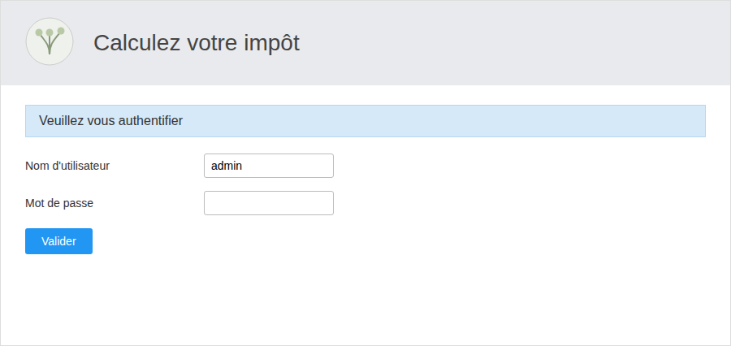
Authentication screen: The username is pre-filled with “admin” for convenience; if authentication fails, an error message appears here, above the form.
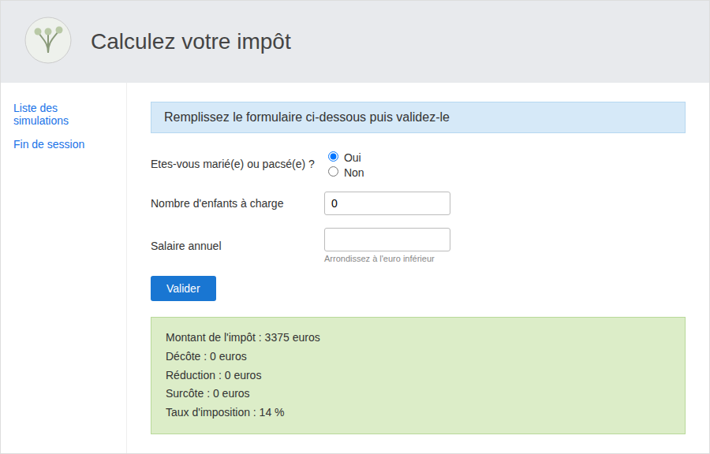
Tax calculation screen, after submitting the first form: the green box displays the result calculated in the browser by the [métier] layer (tax, discount, reduction, surcharge, rate, converted here to a percentage).
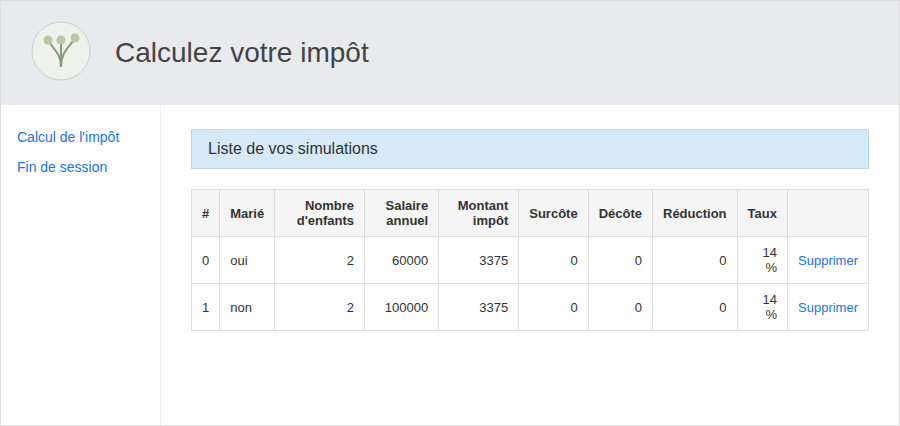
"List of Your Simulations" screen, accessed by clicking the link of the same name: each row corresponds to a simulation stored in the browser’s [this.simulations] table, along with its "Delete" link.
The five views are as follows: authentication, calculation with results, list of simulations, deletion of a simulation (which re-displays the updated list), and end of session (which returns to the authentication screen)—all without ever making any requests to the PHP server beyond the three actions: init-session, authenticate-user, and get-admindata.
6.6. Conclusion
This chapter has shown how the same business logic foundation (DAO and business layers) can be executed both from the command line (node.js, chapters “Client HTTP 1” and “Client HTTP 2”) as in a browser (chapter “Client HTTP 3”), using a suitable compilation tool—in this case, webpack and ts-loader. This TypeScript foundation is the starting point for modern front-end frameworks (React, Vue, Angular...), which are built on the same building blocks: modules, classes, async/await, and a build tool that assembles them for the browser.